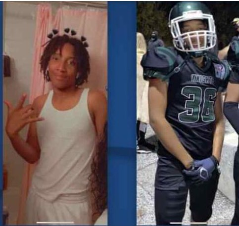

Timeline photos
Zion Neal, 19, of Akron was shot at the Akron Skate Park and dropped off at a Barberton hospital, where he was pronounced dead on Dec. 12 2022.
"He was a great kid, didn't bother anybody, had a bright future. He had a job, he was young, working at Amazon and was looking forward to life like all of us," his cousin, La-Angel Williams said. "He wasn't a hood kid, didn't hang out on the street or anything like that, so we don't understand why ... it was senseless, we don't even know why."
Please ask yourself why our kids are being murdered, why our teachers feel unsafe in our schools. Why is this happening?